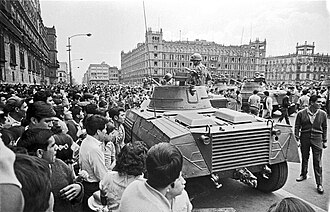
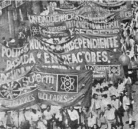

El milagro mexicano
Fue la epoca de mas expansion y desarollo en Mexico de 1940 al 1970


La represion politica
A pesar del auge, el estado oprimio a los mas necesitados de la sociedad mexicana
Lazaro Cardenas Del Rio
Primer presidente de mexico luego del maximato Consolido el presidenciamlismo.
Adolfo Ruiz Cortines
El prisidente que concedio el voto a las mujeres en 1953 goberno con austeridad.
Gustavo Diaz Ordaz
Uno de los mejores presidentes economicamente hablando pero manchado por su represion en eespecial el 2 de octubre de 1968 por la matanza de tlatelolco.
Los movimientos campesinos El primer grupo marginado.
El grupo olvidado por el gobierno mexicano que pese a los intentos de ayuda no fueron suficientes levantandose en los estados que dependen de la agricultura como Querrero, Morelos, Chihuahua, Oaxaca y Chiapas.
Los movimientos obreros El segundo grupo marginado.
Con pesimas condiciones te trabajo que no reflejaban su trabajo de buena manera sumandole que sus sindicatos que los deberian apoyar eran controlados por el gobierno levanto el descontento general de los trabajores llegando a multiples moviemtos como el del ferrocarrilero, el magistral o el médico.

El movimiento estudiantil de 1968 Una tragedia que sacude gasta hoy.
El movimiento surge de los jovenes descontentos por el gobierno y su forma de gobernarcon un enfrentamiento que termino con la involucracion de represion policiaca llamando la antencion de los universitarios que hacen un consejo para expresar sus demandas organizando varias marchas hasta que por la violencia del estado desemboca en la matanza de tlatelolco donde el ejercito abrio fuego en contra de civiles.